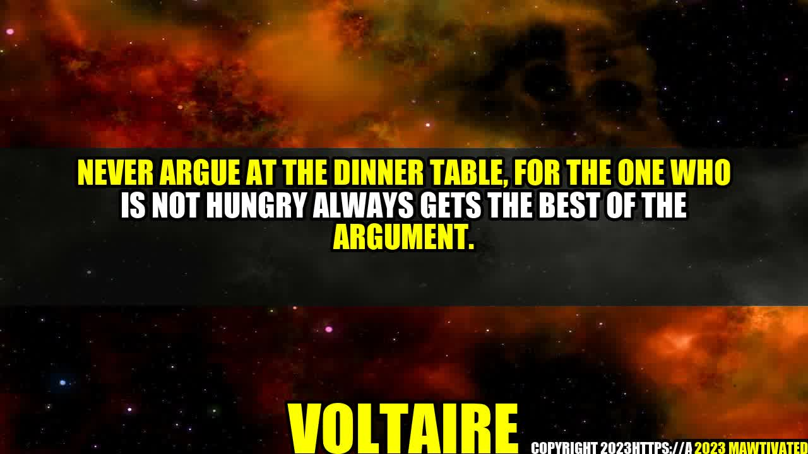

The Art of Civil discourse: Why It's Important to Avoid Arguments at the Dinner Table

It's a scenario that many of us can relate to. You're sitting at the dinner table with your family or friends, and someone makes a comment that clashes with your beliefs or values. Before you know it, you're engaged in a heated argument that leaves everyone feeling frustrated and angry.
However, as Voltaire once said, "Never argue at the dinner table, for the one who is not hungry always gets the best of the argument." In this article, we'll explore why it's important to avoid arguments at the dinner table and how to engage in civil discourse instead.
The Importance of Civil Discourse
Civil discourse refers to the respectful exchange of ideas and opinions between individuals who may hold different views. It's an essential part of a healthy democracy and a vital tool for resolving conflicts.
However, civil discourse can be challenging, especially when emotions are high, and people feel strongly about their beliefs. That's why it's essential to avoid arguments at the dinner table.
An Inspiring Story of Civil Discourse
I once attended a dinner party where a group of friends were discussing politics. One of the guests expressed a view that was opposed to the rest of the group, which led to a heated argument. However, the host quickly intervened and suggested that they engage in civil discourse instead of an argument.
The host proposed that they take turns sharing their perspectives, without interrupting or attacking each other. Everyone agreed, and they took turns speaking and listening. In the end, they discovered that they had more in common than they realized and were better able to understand the reasons behind their differences. It was a remarkable example of how civil discourse can bridge divides and bring people together.
Why Arguments at the Dinner Table Should be Avoided
Here are just a few reasons why it's vital to avoid arguments at the dinner table:
- It can ruin the meal and the atmosphere: Arguments generate negative energy and can ruin the mood of the dinner party. Instead of enjoying the meal and each other's company, people become tense and uncomfortable.
- It can damage relationships: Arguments can alienate people from one another and create a lasting sense of resentment or hostility. It's not worth it to risk damaging important relationships over disagreements.
- It's unlikely to change anyone's mind: Arguments rarely lead to persuasion or conversion, particularly when they're emotional. People tend to become defensive and entrenched in their positions when they feel attacked or criticized.
- It undermines the values of civil discourse: Engaging in arguments perpetuates a culture of aggression and disrespect, not civil discourse. Instead of attacking or dismissing opposing views, we should seek to understand them and learn from them.
How to Engage in Civil Discourse Instead
Now that we've explored the importance of civil discourse, here are some practical tips for how to engage in it at the dinner table:
- Set ground rules: Before discussing sensitive or controversial topics, establish some ground rules for the conversation. This could include taking turns speaking, avoiding personal attacks, or focusing on facts instead of emotions.
- Listen actively: Instead of waiting for your turn to speak, actively listen to what others are saying. Try to understand their perspective and ask questions to clarify their thinking.
- Practice empathy: Empathy is the ability to understand and feel the emotions of others. When engaging in civil discourse, it's essential to practice empathy and see things from the other person's point of view.
- Acknowledge common ground: Even if you don't agree with someone, acknowledge areas of common ground or shared values. This can help build bridges and create a sense of mutual respect.
"We don't have to agree on everything to be respectful and civil to one another" - Barack Obama
In Conclusion: Why Civil Discourse Matters
In conclusion, avoiding arguments at the dinner table and engaging in civil discourse instead is essential for creating a healthy and respectful society. By practicing active listening, empathy, and acknowledging common ground, we can bridge divides and find solutions to the challenges we face today.
Remember these three points:
- Avoid arguments at the dinner table as they ruin the mood and relationships
- Engage in civil discourse instead by listening actively, practicing empathy, and acknowledging common ground.
- By valuing civil discourse, we create a culture of mutual respect, understanding, and collaboration.
Curated by Team Akash.Mittal.Blog
Curated by Team Akash.Mittal.Blog
Share on Twitter Share on LinkedIn